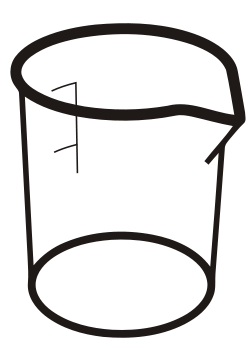

Using RDKit
without RDKit

Beaker update
Michał Nowotka
ChEMBL Group
EMBL-EBI
What is Beaker?
Remote RDKit (and OSRA) accessible over HTTP from the Internet or locally.
Can you be more specific?
- A lightweight web framework
- Written in Python
- Based on Bottle
- Exposing REST API
- Provinding cheminformatics services
- Easy to extend and modify
What has changed?
- Beaker was first presented a year ago
- It's not a ... anymore
- Production ready
- In fact, used in production already
- Provinding cheminformatics services
- Easy to extend and modify
Disclaimer
- This is a pet-project
- Developed in free time
- Unfinished
- Proof-of-concept
Motivation
RDKit installation process:
Expectations:
activate rdkit-virtualenv
pip install rdkit
Reality:
- 859 hits for build on
rdkit-discuss
- 498 hits for install
Motivation
- Virtualenv is essential tool for python developers
- Remember PIL and Pillow case?
- VMs and Doker are not (yet?) an answer
Motivation
Beaker is to RDkit like Sorl to
Lucene.
Beaker is to RDkit like aquarium
to fish.
- Server platform and RDKit container
- Provides cheminformatics tools
- REST-like HTTP API
- Easy to use from any programming language
- Install Beaker on one machine instead of installing RDKit on many hardware/software
configurations
Motivation
- More and more people are using RDKit as a service
- Why not to try to standardise it?
- Maybe even include in distribution...
- So we don't have to reinvent the wheel all the time
Motivation
I'm into webservices anyway:
https://www.ebi.ac.uk/chemblws2
So why something different? Software
stack!
- Django ORM
- Tastypie
- Kilolines of code
- And RDKit webservices can be dead simple!
RDKit and OSRA
together?
- Complementary Cheminformatics libraries
- OSRA extends possible RDKit input formats
- Both are Open
- OSRA is even harder to install and available only in C++
Ingredients
- OSRA - utility designed to convert graphical representations of chemical
structures.
- RDKit - Cheminformatics and Machine Learning Software.
- Bottle - fast, simple and lightweight WSGI micro web-framework for Python.
- Tornado - Python web framework and asynchronous networking library.
Why this choice?
- This needs to be lightweight.
- But fast and efficient.
- With small number of small dependencies.
- Well known, standard, virtualenv-friendly dependencies
- Small and simple codebase.
- Generic, elegant, robust API
Overview
Format conversion:
ctab2smiles / smiles2ctabctab2inchi / inchi2ctabctab2image / image2ctabinchi2inchiKey
Overview
- All methods implemented as
POST and some (x2ctab) as
GET
- For
GET, parameters have to be base64 encoded
- All methods support batch processing
Demo
curl -X POST http://beaker/ctab2image -F filedata="@out.mol" > out.png
curl -X POST http://beaker/image2ctab --data-binary "@aspirin.jpg" > out.mol
curl -X POST http://beaker/smiles2ctab --data-binary "@a.smi"
curl -X POST http://beaker/smiles2ctab --data "CNc1ncnc2c1ncn2Cc1cccc(F)c1F
curl -X POST http://beaker/inchi2inchiKey --data "InChI=1S/C2H6O/c1-2-3/h3H,2H2,1H3"
Better example: Clippy
Potential use cases
- Access from languages like java script, ruby
- Webapplications
- Mobile apps (camera + OSRA + RDKit)
- Small desktop apps (clippy)
Future
- Different output formats: json, jsonp, xml
- Implement stub methods
- Compound descriptors: logP, TPSA, molWt, etc.
- Editing molecules: addHs, removeHs, kekulize
- Ring information, SSSR, sanitize...
- IUPAC names
- Pymol, matplotlib